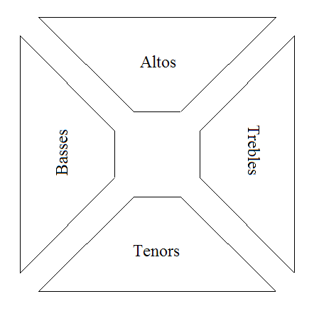
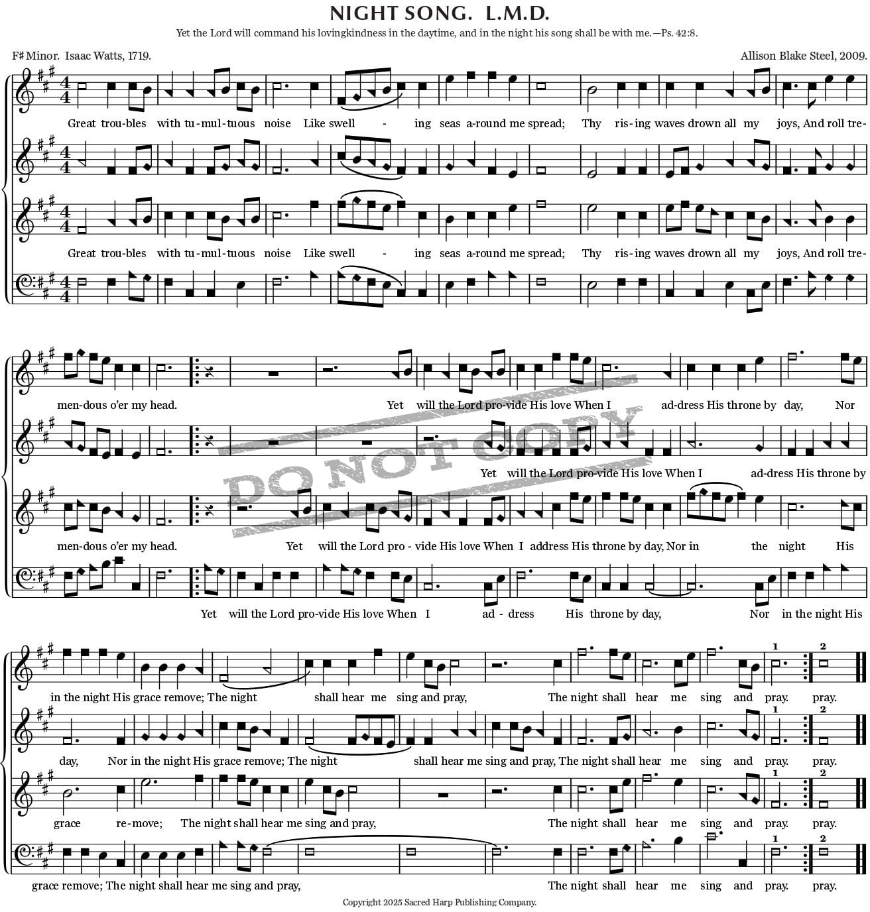

A final presentation
The Sacred Harp Agent
A local search tool for a living singing tradition—and the collection behind it.
The tradition
What is Sacred Harp?
Sacred Harp is a group singing tradition from the United States. Singers use The Sacred Harp, a book of hymns and other songs. They sit in a square and sing together.
The singers make the music.
The same text can appear in different books.
Singers take turns leading songs.
Speaker note
Basis: the earlier local Sacred Harp presentation, “Sacred Harp from the ground up.”How singing works
The hollow square

Everyone faces inward. The leader stands in the middle and beats time. The geometry makes listening mutual: the sound is aimed at the square, not at a stage.
How notation works
Four shapes help people learn the notes.
Each shape names a syllable: fa · sol · la · mi. Singers use the shapes to learn unfamiliar music.
The shapes are a navigation system, not decoration: they help a singer enter unfamiliar music together with the room.
A page from the repertoire
264 · Night Song
A sheet-music page shows the title, meter, key, four parts, and text that the tool can search.

The room in motion
How a tune starts
A leader chooses a tune and announces its number.
Someone gives the starting notes so the room can enter.
The group often sings the melody on fa-sol-la-mi first.
Then the poetry arrives with the full force of the parts.
The problem
A rich tradition is hard to search.
A lyric can recur under different tune names, page numbers, books, and editions.
Revisions preserve continuity while changing metadata, arrangement, or text presentation.
A result is not enough. The researcher needs source notes, book families, and a traceable explanation.
Local notes, scans, transcriptions, and research discoveries accumulate over time.
What I built
A local tool for searching the collection.
I built the tool because the same text can appear under different songs, books, and editions. It searches those records and shows where each result came from.
Keep source links
- Source note
- Book and edition
- Song and text
Search the notes
- SQLite / FTS5
- Text and song records
- Cross-book links
Show the source
- Matching text
- Citations
- Known limits
Live demo · have the environment running
Trace one question from text to evidence.
Ask: “Where else does this text appear?” A good answer is a small map, not a single hit.
“Night Song”
Find the text family and its known song records.
Source text
Connect the 2009 setting to Isaac Watts, 1719, and Psalm 42.
Context
Separate the older text from the newer musical setting.
Course concepts
Four ideas shaped the project.
Find matching records.
Connect songs, texts, and books.
Give the model search results before it answers.
Measure correct results.
By the numbers
The collection and the results.
Evaluation snapshot
The tool found text well. It was less reliable when it had to write missing metadata: 17.4% correct.
Retrospective
What worked and what did not.
Evidence stayed attached to the answer.
Corpus cleanup and edition matching.
A plausible answer can still blend sources.
Design the evaluation set before polishing the interface.
Harder than expected
Corpus cleanup was the hidden project.
The same text can have different names, numbers, and book appearances.
Some notes had rich prose but no reliable meter, key, or lyricist field.
It is easy to show that search returns something; it is harder to prove that it returned the right relationship.
Retrieval quality depends on the data model long before the chat interface.
What went horribly wrong
A plausible answer can still be wrong.
Semantic similarity alone can collapse distinct songs or text families into one fuzzy result.
Route by type, preserve keys, surface matched fields, and make the human-readable source part of the answer.
If I did it again
Design the evaluation set before expanding the interface.
Define cross-book test pairs first.
Record expected provenance with every benchmark question.
Build the citation view before adding more conversational polish.
The next version should make correctness visible at a glance.
A page from the repertoire
264 · Night Song
A sheet-music page makes the corpus tangible: title, meter, key, four parts, text, and the possibility of hearing each section separately.
The tool connects this page to the text and book records in the collection.
The point
Make the archive easier to enter without flattening it.
Sacred Harp is a group of people carrying a book together. My tool helps one researcher find the next page, connection, and source.
Built from the local Sacred Harp corpus and the earlier “Sacred Harp from the ground up” presentation.